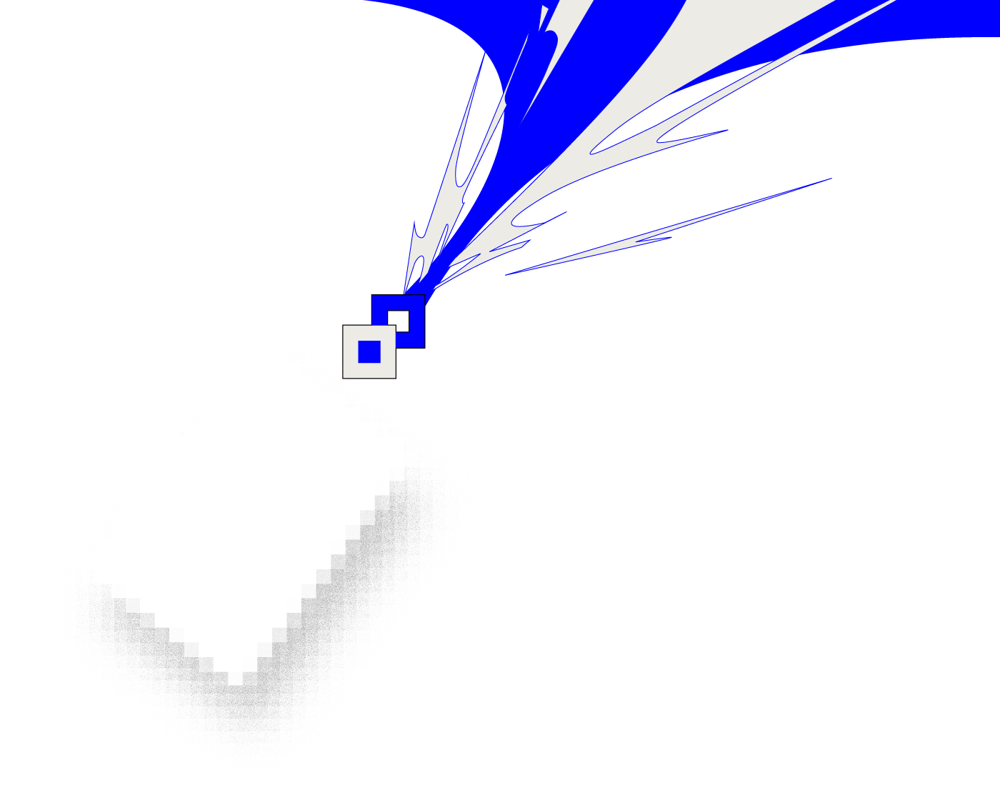

WEBAR · CARD CONTENT
掃描卡蓋圖案，打開你預先放進來的內容。卡蓋滑到哪一格，就顯示哪一頁；鎖定後也可以直接在手機上左右滑動切換。

01 · 名片資訊
這些欄位會顯示在觀看端的普通名片頁；空白欄位不會顯示。
02 · 卡蓋圖案與內容
最多 8 張。這個順序就是卡蓋圖案 1、2、3…；掃到哪一張，就先顯示哪一頁。
還沒有卡蓋圖案。先上傳 1 張，再為它選一種內容。
編譯成功後，卡蓋圖案、內容與編譯結果會自動存在這台手機；重新整理可以繼續。換手機或無痕模式不會同步。
03 · AR 顯示位置
平面內容會出現在卡片周圍；預設在卡片上方、貼著卡面，不覆蓋卡片。
悠遊卡
內容
示意圖：綠框是 AR 內容，藍框是 85.6 × 54 mm 卡片。拉到「正中」會蓋到卡片；若內容跑出畫面，先降低大小或把手機往後退。
位置
如果內容超出螢幕，先降到 70～80%，或把手機往後退一點。
方向
如果 AR 內容一直抖動，先選「穩定」；如果覺得內容慢半拍，再往「靈敏」調。
目前的位置會覆蓋卡片。建議改成上方／下方，或把 X／Y 偏移調回 0。
互動網頁、YouTube／Vimeo、PDF 會用「下方內容面板」開啟，不跟著卡片移動；平面文字、照片、上傳影片則會出現在卡片周圍。